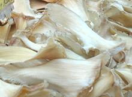

Shark Fin - Real & Artificial
Shark Fin Soup has been an essential for Chinese banquets for over 800 years.
The reason is simple - the cost. It has been a way for the very wealthy to
boast of their wealth. Here in California, Chinese restaurants were serving
Shark Fin Soup for 2011 US $80 to over $100 per bowl, and in
Hong Kong prices ranging from 2011 US $300 to $750 per bowl have been
reported. See our 2011 article
Chinese Restaurateurs Protest Shark Fin Ban
This has been very hard on the sharks, especially given the methods used
in Asia for harvesting, just cutting off the fins and tossing the shark
back to die. This has caused a backlash against shark fin soup in just about
the whole world, except, of course, China.
Today, in California, Hawaii, Guam, Oregon, Washington, Nevada, Illinois,
New York, Delaware, Maryland, New Jersey, and Rhode Island,if you get caught
in posession of Shark Fin, or serving Shark Fin Soup, you may not be finned,
but you certainly will be fined, and heavily. In all US fisheries, if you are
caught with shark fins that are not attached to a shark you intend use all of,
you are in deep trouble.
Consequently, artificial Shark Fin has been developed and is quite
available. This is easy, because the shark fin provides no flavor to the
soup, just some texture. Unfortunately, the artificial product is not at
all acceptable for the banquet dish, because it is not outrageously
expensive.
More on Seafood Products.

Real Shark Fin:
I cannot inform you where to purchase Real
Shark Fin, because that might make me an accessory to the crime - besides,
I don't know. Also, the seller might be an undercover agent for the
California Fish and Game Commission - big trouble right there.
A pile of Shark Fins for sale in Taiwan, photo by Easy Traveler
(cropped) distributed under license Creative Commons
Attribution-ShareAlike v2.0 Generic.
Artificial Shark Fin:
This product may be made of Gelatin
or Agar-agar. The Artificial Shark Fin in the photo above was sold in the
form of a frozen slab weighing 1 pound (0.45 kg) for 2021 US $3.99. This
is significantly less costly than Real Shark Fin, even if you don't consider
the added cost of court fees and fines if you get caught. The photo specimen
was purchased from a large Asian market in Los Angeles (San Gabriel).
Product of Taiwan. Ingred: gelatin, water, sucrose, salt, sodium
alginate.
 Most folks, including street vendors in Southeast Asia and Hong Kong,
use Bean Thread Noodles. I found one Singapore recipe recommending "Korean
Glass Noodles", which suggested to me she could mean thin Korean Sweet Potato
Noodles. I had those on hand (where I live has evolved into a Korea Town),
and found them far superior to Bean Threads in size, color and flavor. They
are shown in the photo, and are 0.060 inch (1.5 mm) in diameter.
Most folks, including street vendors in Southeast Asia and Hong Kong,
use Bean Thread Noodles. I found one Singapore recipe recommending "Korean
Glass Noodles", which suggested to me she could mean thin Korean Sweet Potato
Noodles. I had those on hand (where I live has evolved into a Korea Town),
and found them far superior to Bean Threads in size, color and flavor. They
are shown in the photo, and are 0.060 inch (1.5 mm) in diameter.
These substitutes are not quite the right texture, as real shark fin
is said to be both gelatinous and brittle. More accurate substitutes have
been made experimentally, but are not considered worth the added cost.
Today, nobody except an eco-criminal would detect the difference.
Cooking:
Preparation of Fresh Shark Fin is long and tedious,
so it is usually purchased in prepared and dried form. This still needs a
three hour soak and simmering in several changes of water to make it recipe
ready.
Artificial Shark Fin is a lot easier. That in the photo at the top of this
page can just be thawed and rinsed and put into the soup any time, as it is
quite firm, and still quite firm after an hour of simmering, possibly a bit
too firm.
For Bean Threads, just a soak in cool water until softened, and then 2
minutes in the broth before serving. Korean Sweet Potato Noodles should be
soaked somewhat longer, then added to the soup for about 8 minutes of final
cooking. Bean Threads are fairly durable in cooking, and Sweet Potato
Noodles even more so, so timing is not real critical.
Health & Nutrition
The Chinese hold that Shark Fin improves dong endurance, prevents cancer
and heart disease, improves skin quality, provides energy, and a whole lot of
other things. Scientific investigation has been able to confirm none of
these, but cautions that high concentrations of Neurotoxin BMAA found
in shark fin may contribute to Dementia. Also, shark, being a top predator,
Mercury concentration is an issue, and too much Shark Fin is suspected of
causing male sterility.
Artificial Shark Fin offers none of these health impacts, but it's like in
Japan with Fugu. Fugu fish can be raised without the deadly toxins, but
without the deadly toxins, the Japanese are uninterested. The excitement
of the risk of death, and the extremely high cost of Fugu prepared by a
licensed chef contribute essential elements to flavor and enjoyment.
ab_flapz 210111 - www.clovegarden.com
©Andrew Grygus - agryg@clovegarden.com - Photos
on this page not otherwise credited © cg1
- Linking to and non-commercial use of this page permitted